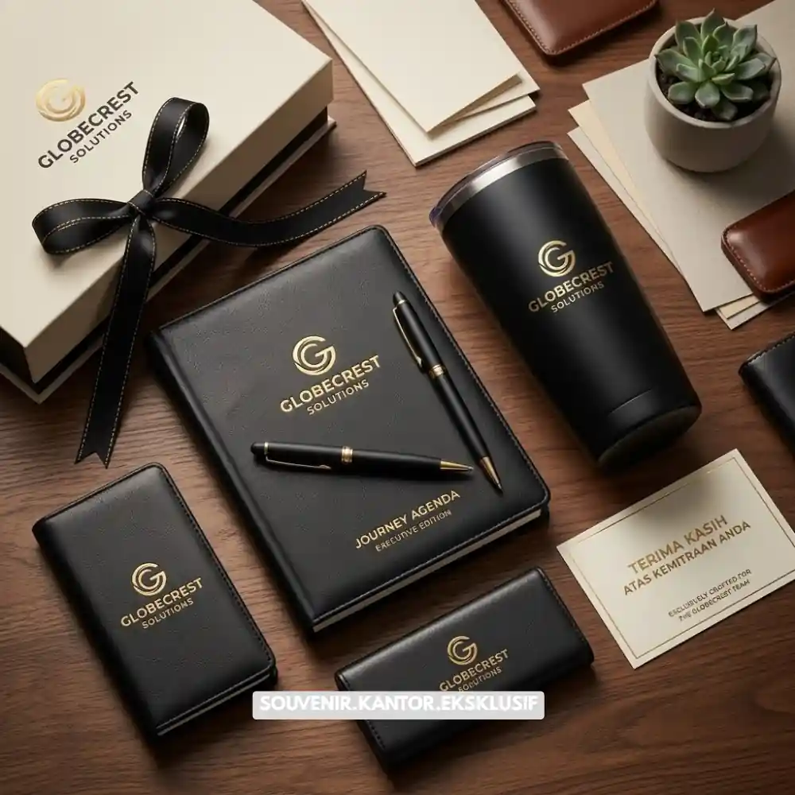
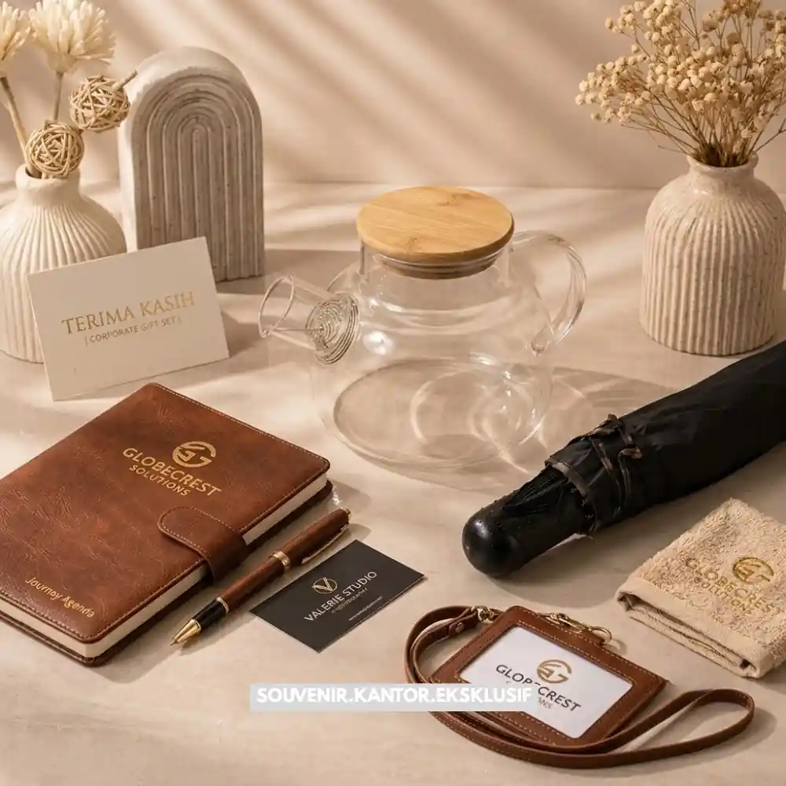

Daftar Isi
Gift set perusahaan adalah paket hadiah berisi kumpulan barang yang dikemas rapi untuk keperluan bisnis, seperti apresiasi klien, sambutan karyawan baru, atau momen hari raya. Pemilihan isi, kemasan, dan waktu pengiriman menentukan kesan yang diterima penerima.
- Gift set perusahaan digunakan untuk membangun relasi dengan klien, mitra, dan karyawan
- Isi gift set bisa disesuaikan dengan budget, tema acara, dan identitas brand
- Kemasan dan personalisasi memengaruhi kesan profesional yang ditinggalkan
- Waktu pengiriman perlu direncanakan agar tidak terlambat pada momen penting
- Pemilihan vendor yang tepat memengaruhi kualitas dan konsistensi hasil akhir
Apa Itu Gift Set Perusahaan?
Gift set perusahaan adalah kumpulan barang yang dipilih dan dikemas sebagai satu paket hadiah untuk kepentingan bisnis, bukan konsumsi pribadi semata. Barang di dalamnya biasanya mencerminkan citra perusahaan pemberi.
Gift set perusahaan berbeda dari hadiah pribadi biasa karena tujuannya bersifat strategis. Perusahaan menggunakannya untuk memperkuat hubungan bisnis, menunjukkan apresiasi, atau memperkenalkan identitas brand kepada penerima. Isi paket umumnya terdiri dari kombinasi barang fungsional, makanan atau minuman, dan elemen branding seperti logo pada kemasan atau produk.
Jenis gift set ini dapat ditujukan untuk berbagai penerima, termasuk klien, mitra kerja, investor, karyawan, hingga tamu acara korporat. Karena sifatnya yang mewakili citra perusahaan, kualitas barang dan kerapian kemasan menjadi pertimbangan penting, bukan sekadar harga.
Batasan yang perlu diperhatikan adalah gift set perusahaan sebaiknya tidak berlebihan nilainya, terutama jika ditujukan untuk klien di sektor yang memiliki aturan gratifikasi ketat. Perusahaan sebaiknya memahami kebijakan internal maupun eksternal terkait pemberian hadiah bisnis sebelum memesan dalam jumlah besar.
Kapan Perusahaan Perlu Memberikan Gift Set?
Gift set perusahaan paling sering diberikan pada momen yang memiliki nilai relasional tinggi, seperti hari raya, ulang tahun perusahaan, atau penutupan kerja sama besar.
Beberapa momen umum yang biasa menjadi alasan pemberian gift set perusahaan antara lain:
- Perayaan hari besar keagamaan atau tahun baru
- Ulang tahun perusahaan atau pencapaian tertentu
- Penyambutan karyawan baru
- Apresiasi kepada klien setelah proyek selesai
- Acara peluncuran produk atau pembukaan cabang baru
- Ucapan terima kasih kepada mitra bisnis jangka panjang
Pemilihan momen yang tepat membuat gift set terasa lebih personal dan relevan, dibandingkan pemberian yang terkesan rutin tanpa alasan jelas. Perusahaan yang merencanakan pemberian gift set jauh hari sebelum momen tersebut umumnya memiliki lebih banyak pilihan vendor dan waktu produksi yang lebih longgar.

Isi Corporate Gift Set Bermanfaat
Apa Saja Jenis Isi Gift Set Perusahaan yang Umum Dipilih?
Isi gift set perusahaan umumnya terdiri dari kombinasi barang fungsional, konsumsi, dan elemen personalisasi yang mencerminkan identitas brand.
Beberapa kategori isi yang sering dipilih perusahaan meliputi:
- Alat tulis dan peralatan kerja seperti notebook, pulpen, atau tumbler
- Produk konsumsi seperti kopi, teh, cokelat, atau kudapan kering
- Aksesori digital seperti power bank atau flashdisk bermerek
- Produk perawatan diri seperti hand sanitizer atau lilin aromaterapi
- Kartu ucapan personal yang mencantumkan nama penerima
Kombinasi isi biasanya disesuaikan dengan profil penerima. Gift set untuk klien korporat cenderung lebih formal dengan barang bernilai fungsional tinggi, sementara gift set untuk karyawan bisa lebih santai dan personal. Perusahaan sebaiknya menghindari barang yang terlalu spesifik seleranya, seperti makanan dengan alergen umum, kecuali sudah memastikan preferensi penerima.
Bagaimana Cara Memilih Gift Set Perusahaan yang Tepat?
Cara memilih gift set perusahaan yang tepat dimulai dari menentukan tujuan pemberian, profil penerima, dan budget yang tersedia sebelum memilih isi dan kemasan.
Langkah yang dapat diikuti perusahaan saat memilih gift set:
- Tentukan tujuan pemberian, apakah untuk apresiasi, promosi, atau sambutan
- Kenali profil dan preferensi umum penerima
- Tetapkan kisaran budget per unit secara realistis
- Pilih isi yang relevan dengan identitas brand
- Pastikan kemasan mencerminkan kesan profesional
- Konfirmasi jadwal produksi dan pengiriman dengan vendor
Perusahaan yang memesan dalam jumlah besar sebaiknya meminta sampel terlebih dahulu untuk memastikan kualitas barang dan kerapian kemasan sebelum produksi massal dilakukan. Hal ini membantu menghindari ketidaksesuaian ekspektasi saat barang sudah dikirim ke banyak penerima.
Berapa Kisaran Budget untuk Gift Set Perusahaan?
Budget gift set perusahaan bervariasi tergantung jenis isi, jumlah pesanan, dan tingkat personalisasi yang diminta, sehingga tidak ada angka baku yang berlaku untuk semua kasus.
Secara umum, budget gift set dapat dikelompokkan menjadi tiga tingkatan, yaitu paket ekonomis dengan isi sederhana dan kemasan standar, paket menengah dengan kombinasi barang fungsional dan branding custom, serta paket premium dengan barang bernilai tinggi dan kemasan eksklusif. Perusahaan biasanya menyesuaikan tingkatan ini dengan level penerima, misalnya budget lebih tinggi untuk klien strategis dibandingkan penerima umum.
Selain harga barang, perusahaan perlu memperhitungkan biaya tambahan seperti custom branding, biaya pengemasan, dan ongkos pengiriman, terutama untuk pengiriman ke banyak lokasi sekaligus. Menentukan budget total di awal membantu proses negosiasi dengan vendor menjadi lebih terarah.
Apa Kesalahan Umum saat Memesan Gift Set Perusahaan?
Kesalahan umum saat memesan gift set perusahaan meliputi pemesanan mendadak, kurang memperhatikan preferensi penerima, dan minimnya konfirmasi kualitas sebelum produksi massal.
Beberapa kesalahan yang sering terjadi antara lain:
- Memesan terlalu mendekati tanggal pengiriman sehingga vendor kesulitan memenuhi standar kualitas
- Tidak menyesuaikan isi gift set dengan profil atau budaya penerima
- Melewatkan proses cek sampel sebelum produksi dalam jumlah besar
- Mengabaikan detail kemasan yang justru memengaruhi kesan pertama
- Tidak mempertimbangkan alamat pengiriman yang tersebar di banyak kota
Menghindari kesalahan ini dapat dilakukan dengan menyusun linimasa pemesanan sejak jauh hari, berkomunikasi jelas dengan vendor mengenai spesifikasi yang diinginkan, dan selalu meminta contoh produk sebelum konfirmasi akhir.

Solusi Vendor Souvenir
Gift set perusahaan berfungsi sebagai alat membangun relasi bisnis yang efektif jika direncanakan dengan matang. Tentukan tujuan pemberian, kenali profil penerima, siapkan budget realistis, dan pastikan kemasan mencerminkan identitas brand secara konsisten. Perencanaan yang dilakukan jauh hari sebelum momen penting membantu perusahaan mendapatkan hasil akhir yang rapi dan tepat waktu.
Untuk memahami lebih dalam mengenai manfaat gift set perusahaan bagi branding, cara memilih sesuai budget dan acara, serta kesalahan umum yang perlu dihindari, silakan lanjutkan membaca artikel pendukung terkait topik ini.
Butuh Bantuan Merancang Corporate Gift Set?
Tim ahli kami siap membantu Anda menyusun paket hadiah eksklusif yang menarik.
Pilihan barang akan disesuaikan dengan ketersediaan budget dan kebutuhan Anda.
Seluruh desain kemasan akan kami selaraskan dengan identitas visual perusahaan Anda.
Dapatkan penawaran harga terbaik untuk pesanan massal!
FAQ Gift Set Perusahaan
Apa itu gift set perusahaan?
Gift set perusahaan adalah paket hadiah berisi kumpulan barang yang dikemas untuk kepentingan bisnis, seperti apresiasi klien atau sambutan karyawan baru, dan mencerminkan identitas brand pemberi.
Kapan waktu yang tepat memesan gift set perusahaan?
Waktu yang tepat adalah beberapa minggu hingga bulan sebelum momen pemberian, agar vendor memiliki cukup waktu untuk produksi dan pengiriman tanpa terburu-buru.
Apakah gift set perusahaan harus selalu memakai logo brand?
Tidak selalu wajib, namun mencantumkan logo pada kemasan atau salah satu item umumnya membantu memperkuat pengenalan brand kepada penerima.
Bagaimana menentukan isi gift set yang sesuai untuk klien maupun karyawan?
Isi gift set sebaiknya disesuaikan dengan profil penerima, formalitas hubungan, serta preferensi umum yang aman, seperti barang fungsional dan konsumsi yang tidak terlalu spesifik seleranya.
Apakah perlu meminta sampel sebelum memesan gift set dalam jumlah besar?
Ya, meminta sampel terlebih dahulu membantu memastikan kualitas barang dan kerapian kemasan sebelum vendor memproduksi dalam jumlah besar.
Maroon Souvenir
Partner Corporate Gift terpercaya di Indonesia. Berpengalaman melayani ratusan perusahaan sejak 2018.
Lihat Portofolio Kami